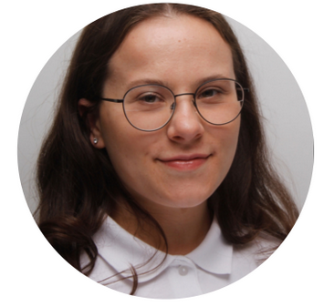

Ich bin Larissa Sowada, 23 Jahre alt und komme aus Pulheim. Ich
bin Junior Frontend Entwicklerin und habe meinen Bachelor in
Digital Technologies and Coding mit dem Schwerpunkt Web
Development abgeschlossen. Während meines Studiums und durch meine
Praktika konnte ich schon viele praktische Erfahrungen sammeln und
herausfinden, wie viel Freude mir die Webentwicklung macht.
Besonders viel gelernt habe ich bei Covestro. Dort habe ich an
modernen Frontend Aufgaben gearbeitet und unter anderem
Benutzeroberflächen mit Angular und TypeScript entwickelt. Ein
weiterer wichtiger Teil meiner Arbeit war die Beschäftigung mit
Barrierefreiheit und Benutzerfreundlichkeit in einer
sprachgesteuerten KI Anwendung. In dieser Zeit habe ich nicht nur
meine technischen Kenntnisse erweitert, sondern auch gemerkt, wie
wichtig mir ein strukturiertes Arbeiten, gute Zusammenarbeit und
klare Kommunikation sind. Diese Fähigkeiten wurden auch in meinen
Zeugnis betont, was mich sehr gefreut hat.
Schon vor meinem Studium konnte ich erste Erfahrungen bei
Railslove sammeln. Dort habe ich eigene Webseiten mit HTML, CSS,
PHP und MySQL umgesetzt und zum ersten Mal gesehen, wie viel Spaß
es macht, Ideen direkt in funktionierende Projekte zu
verwandeln.
Ich entwickle gerne moderne und nutzerfreundliche Webseiten, die
nicht nur technisch zuverlässig sind, sondern auch schön aussehen
und sich gut anfühlen. Ich probiere gerne neue Technologien aus
und möchte mich ständig weiterentwickeln. Die Kombination aus
Kreativität und Technik motiviert mich jedes Mal aufs Neue.
Ich freue mich darauf, meine Fähigkeiten in weiteren Projekten
einzusetzen und mich beruflich wie persönlich weiterzuentwickeln.
Mir ist wichtig, Lösungen zu schaffen, die Menschen wirklich
helfen und die gleichzeitig Freude beim Entwickeln machen.
Über mich

Fun Facts
Fun Facts
Fun Facts über mich
In meiner Freizeit mache ich gerne Sport.
Ich versuche gerade Klavier zu lernen.
Ich mag sauberen, gut strukturierten Code.
Ich probiere gerne neue Web-Technologien aus.